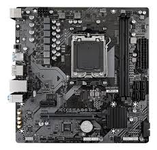
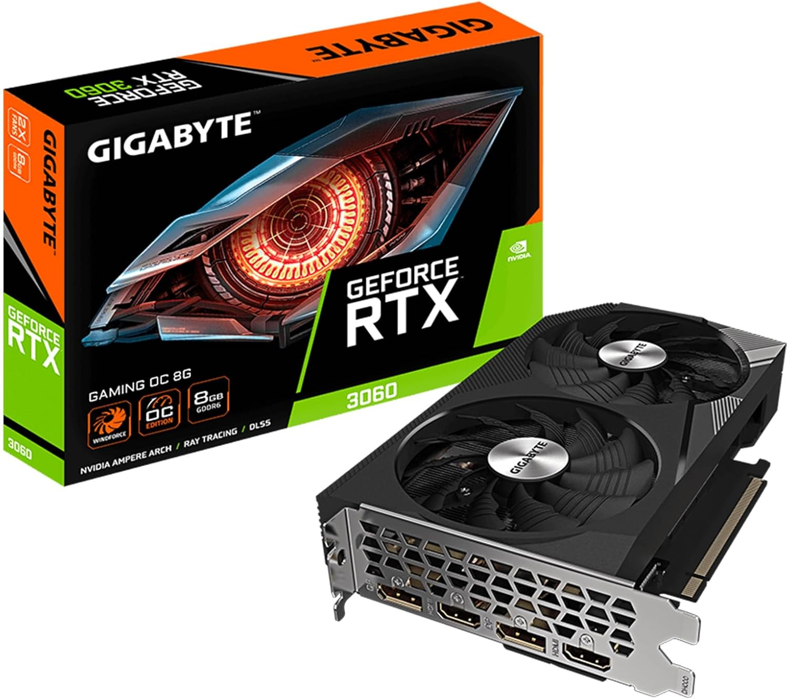
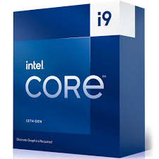
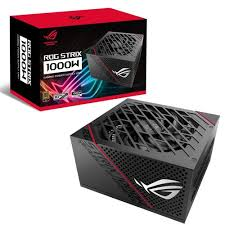
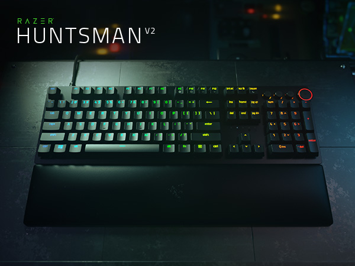

bienvenidos
mira nuestros catalogos de nuestras tienda virtual
con productos de alta calidad y de ultimos modelos
mira nuestros catalogos de nuestras tienda virtual
con productos de alta calidad y de ultimos modelos
✨ Equipos de última generación: computadoras, laptops y monitores.
🎮 Rendimiento al máximo: tarjetas gráficas y accesorios especializados.
🛠️ Soporte técnico confiable: mantenimiento, reparación y asesoría personalizada.
Nuestro objetivo es ofrecerte la mejor experiencia, con productos de calidad y un servicio cercano para que tu inversión en tecnología sea siempre segura y duradera. 🚀
| Nombre | precio | producto | descripcion |
|---|---|---|---|
| placa madre Gigabyte | -1500 BS- |  |
|
| Gigabyte GeForce RTX 3060 | -3500 BS- |  |
|
| procesador Intel Core i9 de 13ª generación. | -2400 BS- |  |
|
| Fuente ASUS ROG STRIX 1000W | -2000 BS- |  |
|
| Monitor gamer HP X34 | -2000 BS- |  |
|
| Razer Huntsman V2 | -1900 BS- |  |
|